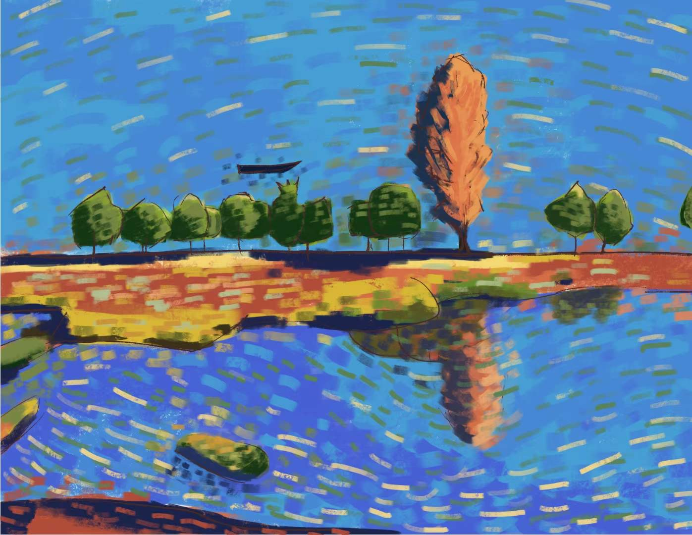
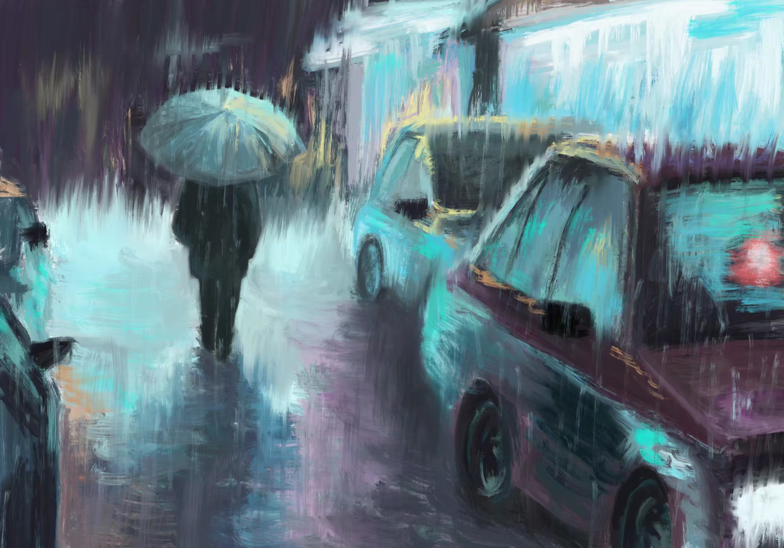
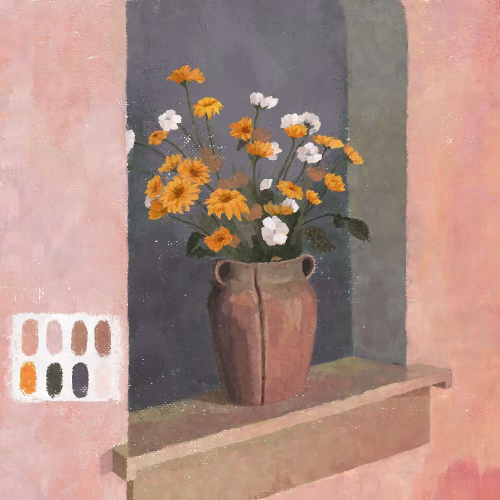
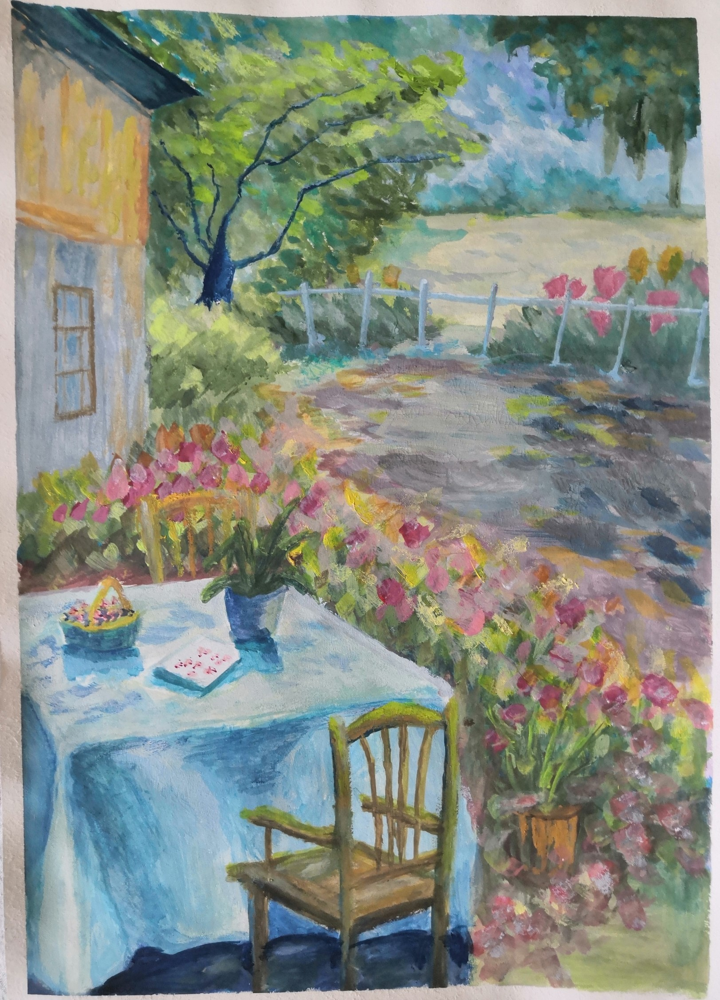
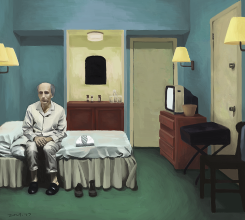

"Many years later, as he faced the firing squad,
Colonel Aureliano Buendía was to remember that distant afternoon when his father
took him to discover ice."
-- One Hundred Years of Solitude

"The pages of the book are
clouded like the windows of an old train, the cloud of smoke rests on the
sentences. It is a rainy evening; the man enters the bar; he unbuttons his
damp overcoat; a cloud of steam enfolds him; a whistle dies away along
tracks that are glistening with rain, as far as the eye can see."
-- If on a Winter's Night a Traveller

"To her son these words conveyed an extraordinary joy, as if it were
settled, the expedition were bound to take place, and the wonder to which
he had looked forward, for years and years it seemed, was, after a night's
darkness and a day's sail, within touch."
-- To the Lighthouse

"In some you exist and not I, while in others I do, and you do not,
and in yet others both of us exist. In this one, in which chance has favored me,
you have come to my gate. In another, you, crossing the garden, have found me dead.
In yet another, I say these very same words, but am an error, a phantom."
-- The Garden of Forking Paths

"They look like white elephants," she said.
"I've never seen one," the man drank his beer.
"No, you wouldn't have."
-- Hills Like White Elephants